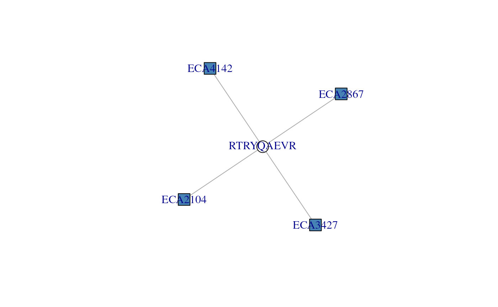
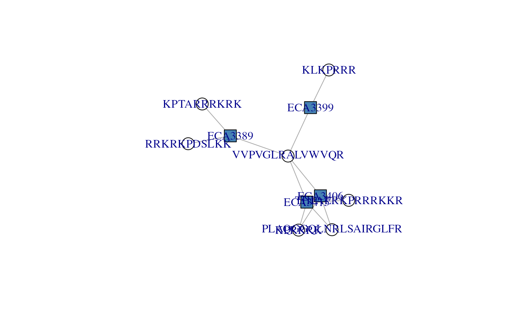
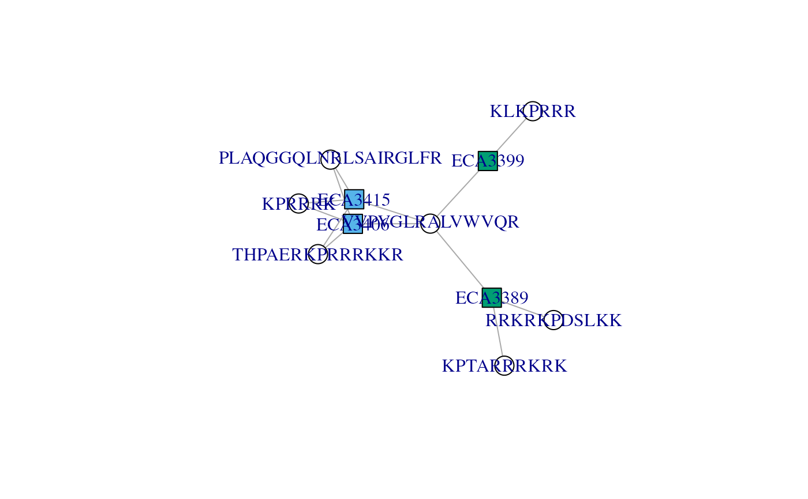
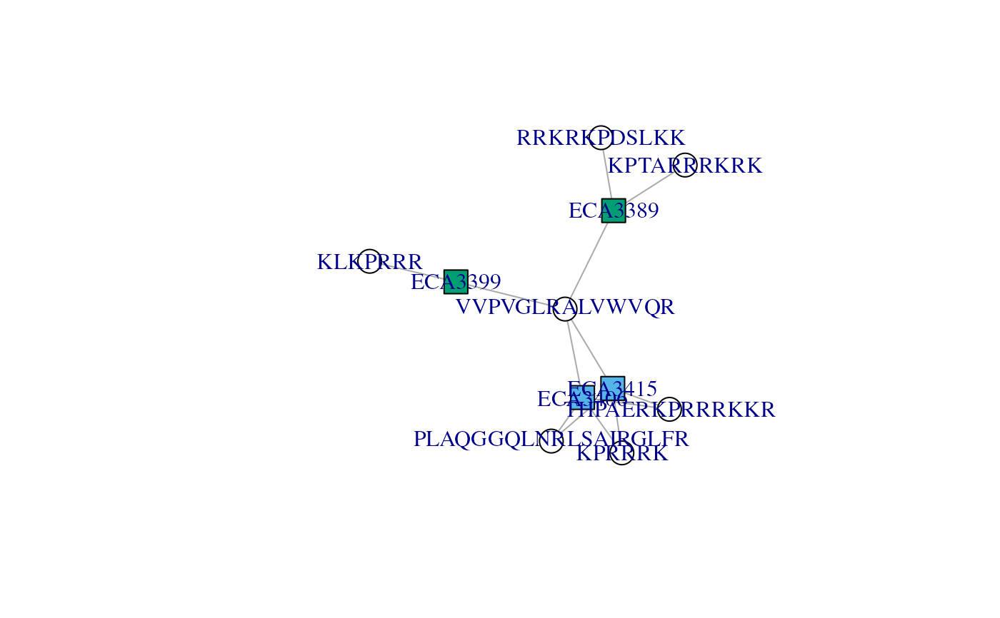

R/ConnectedComponent-class.R, R/adjacencyMatrix-accessors.R
ConnectedComponents.RdConnected components are a useful representation when exploring identification data. They represent the relation between proteins (the connected components) and how they form groups of proteins as defined by shared peptides.
Connected components are stored as ConnectedComponents objects
that can be generated using the ConnectedComponents()
function.
ConnectedComponents(object, ...)
ccMatrix(x)
connectedComponents(x, i, simplify = TRUE)
# S4 method for ConnectedComponents
length(x)
# S4 method for ConnectedComponents
dims(x)
# S4 method for ConnectedComponents
ncols(x)
# S4 method for ConnectedComponents
nrows(x)
# S4 method for ConnectedComponents,integer,ANY,ANY
[(x, i, j, ..., drop = FALSE)
# S4 method for ConnectedComponents,logical,ANY,ANY
[(x, i, j, ..., drop = FALSE)
# S4 method for ConnectedComponents,numeric,ANY,ANY
[(x, i, j, ..., drop = FALSE)
prioritiseConnectedComponents(x)
prioritizeConnectedComponents(x)
# S4 method for ConnectedComponents
adjacencyMatrix(object)For the ConnectedComponents class constructor,
either a sparse adjacency matrix of class Matrix or an
instance of class PSM.
Additional arguments passed to
makeAdjacencyMatrix() when object is of class PSM().
An object of class ConnectedComponents.
numeric(), integer() or logical() to subset the
ConnectedComponents instance. If a logical(), it must be
of same length as the object is subsets.
logical(1) if TRUE (default), the output is
simplified to sparse matrix if i was of length 1, otherwise
a List is returned. Always a List if FALSE.
ignored
ignore
adjMatrixThe sparse adjacency matrix (class Matrix) of
dimension p peptides by m proteins that was used to
generate the object.
ccMatrixThe sparse connected components matrix (class
Matrix) of dimension m by m proteins.
adjMatricesA List containing adjacency matrices of each
connected components.
Instances of the class are created with the
ConnectedComponent() constructor from a PSM() object or
directly from a sparse adjacency matrix of class Matrix. Note
that if using the latter, the rows and columns must be named.
The sparse peptide-by-protein adjacency matrix is stored in the
ConnectedComponent instance and can be accessed with the
adjacencyMatrix() function.
The protein-by-protein connected components sparse matrix of
object x can be accessed with the ccMatrix(x) function.
The number of connected components of object x can be
retrieved with length(x).
The size of the connected components of object x, i.e the
number of proteins in each component, can be retrieved with
ncols(x). The number of peptides defining the connected
components can be retrieved with nrows(x). Both can be
accessed with dims(x).
The connectedComponents(x, i, simplify = TRUE) function
returns the peptide-by-protein sparse adjacency matrix (or
List of matrices, if length(i) > 1), i.e. the subset of the
adjacency matrix defined by the proteins in connected
component(s) i. i is the numeric index (between 1 and
length(x)) of the connected connected. If simplify is TRUE
(default), then a matrix is returned instead of a List of
matrices of length 1. If set to FALSE, a List is always
returned, irrespective of its length.
To help with the exploration of individual connected Components,
the prioritiseConnectedComponents() function will take an
instance of ConnectedComponents and return a data.frame where
the component indices are ordered based on their potential to
clean up/flag some peptides and split protein groups in small
groups or individual proteins, or simply explore them. The
prioritisation is based on a set of metrics computed from the
component's adjacency matrix, including its dimensions, row and
col sums maxima and minima, its sparsity and the number of
communities and their modularity that quantifies how well the
communities separate (see modularity.igraph(). Note that
trivial components, i.e. those composed of a single peptide and
protein are excluded from the prioritised results. This
data.frame is ideally suited for a principal component
analysis (using for instance prcomp()) for further inspection
for component visualisation with plotAdjacencyMatrix().
## --------------------------------
## From an adjacency matrix
## --------------------------------
library(Matrix)
#>
#> Attaching package: ‘Matrix’
#> The following object is masked from ‘package:S4Vectors’:
#>
#> expand
adj <- sparseMatrix(i = c(1, 2, 3, 3, 4, 4, 5),
j = c(1, 2, 3, 4, 3, 4, 5),
x = 1,
dimnames = list(paste0("Pep", 1:5),
paste0("Prot", 1:5)))
adj
#> 5 x 5 sparse Matrix of class "dgCMatrix"
#> Prot1 Prot2 Prot3 Prot4 Prot5
#> Pep1 1 . . . .
#> Pep2 . 1 . . .
#> Pep3 . . 1 1 .
#> Pep4 . . 1 1 .
#> Pep5 . . . . 1
cc <- ConnectedComponents(adj)
cc
#> An instance of class ConnectedComponents
#> Number of proteins: 5
#> Number of components: 4
#> Number of components [peptide x peptides]:
#> 3[1 x 1] 0[1 x n] 0[n x 1] 1[n x n]
length(cc)
#> [1] 4
ncols(cc)
#> [1] 1 1 2 1
adjacencyMatrix(cc) ## same as adj above
#> 5 x 5 sparse Matrix of class "dgCMatrix"
#> Prot1 Prot2 Prot3 Prot4 Prot5
#> Pep1 1 . . . .
#> Pep2 . 1 . . .
#> Pep3 . . 1 1 .
#> Pep4 . . 1 1 .
#> Pep5 . . . . 1
ccMatrix(cc)
#> 5 x 5 sparse Matrix of class "dsCMatrix"
#> Prot1 Prot2 Prot3 Prot4 Prot5
#> Prot1 1 . . . .
#> Prot2 . 1 . . .
#> Prot3 . . 2 2 .
#> Prot4 . . 2 2 .
#> Prot5 . . . . 1
connectedComponents(cc)
#> List of length 4
connectedComponents(cc, 3) ## a singel matrix
#> 2 x 2 sparse Matrix of class "dgCMatrix"
#> Prot3 Prot4
#> Pep3 1 1
#> Pep4 1 1
connectedComponents(cc, 1:2) ## a List
#> List of length 2
## --------------------------------
## From an PSM object
## --------------------------------
f <- msdata::ident(full.names = TRUE, pattern = "TMT")
f
#> [1] "/usr/local/lib/R/host-site-library/msdata/ident/TMT_Erwinia_1uLSike_Top10HCD_isol2_45stepped_60min_01-20141210.mzid"
psm <- PSM(f) |>
filterPsmDecoy() |>
filterPsmRank()
#> Loading required namespace: mzR
#> Removed 2896 decoy hits.
#> Removed 155 PSMs with rank > 1.
cc <- ConnectedComponents(psm)
cc
#> An instance of class ConnectedComponents
#> Number of proteins: 1504
#> Number of components: 1476
#> Number of components [peptide x peptides]:
#> 954[1 x 1] 7[1 x n] 501[n x 1] 14[n x n]
length(cc)
#> [1] 1476
table(ncols(cc))
#>
#> 1 2 3 4
#> 1455 17 1 3
(i <- which(ncols(cc) == 4))
#> [1] 689 1079 1082
ccomp <- connectedComponents(cc, i)
## A group of 4 proteins that all share peptide RTRYQAEVR
ccomp[[1]]
#> 1 x 4 sparse Matrix of class "dgCMatrix"
#> ECA2104 ECA2867 ECA3427 ECA4142
#> RTRYQAEVR 1 1 1 1
## Visualise the adjacency matrix - here, we see how the single
## peptides (white node) 'unites' the four proteins (blue nodes)
plotAdjacencyMatrix(ccomp[[1]])

## A group of 4 proteins formed by 7 peptides: THPAERKPRRRKKR is
## found in the two first proteins, KPTARRRKRK was found twice in
## ECA3389, VVPVGLRALVWVQR was found in all 4 proteins, KLKPRRR
## is specific to ECA3399, ...
ccomp[[3]]
#> 7 x 4 sparse Matrix of class "dgCMatrix"
#> ECA3406 ECA3415 ECA3389 ECA3399
#> THPAERKPRRRKKR 1 1 . .
#> KPTARRRKRK . . 2 .
#> PLAQGGQLNRLSAIRGLFR 1 1 . .
#> RRKRKPDSLKK . . 1 .
#> KPRRRK 1 1 . .
#> VVPVGLRALVWVQR 1 1 1 1
#> KLKPRRR . . . 1
## See how VVPVGLRALVWVQR is shared by ECA3406 ECA3415 ECA3389 and
## links the three other componennts, namely ECA3399, ECA3389 and
## (ECA3415, ECA3406). Filtering that peptide out would split that
## protein group in three.
plotAdjacencyMatrix(ccomp[[3]])

## Colour protein node based on protein names similarity
plotAdjacencyMatrix(ccomp[[3]], 1)

## To select non-trivial components of size > 1
cc2 <- cc[ncols(cc) > 1]
cc2
#> An instance of class ConnectedComponents
#> Number of proteins: 49
#> Number of components: 21
#> Number of components [peptide x peptides]:
#> 0[1 x 1] 7[1 x n] 0[n x 1] 14[n x n]
## Use components features to prioritise their exploration
pri_cc <- prioritiseConnectedComponents(cc)
pri_cc
#> nrow ncol n_coms mod_coms n rs_min rs_max cs_min cs_max sparsity
#> 1082 7 4 3 0.3698225 14 1 4 2 4 0.5357143
#> 691 3 2 2 0.2187500 4 1 2 1 3 0.3333333
#> 1079 3 4 2 0.2040816 7 1 3 1 2 0.4166667
#> 920 4 2 2 0.1666667 6 1 2 3 3 0.2500000
#> 1000 2 2 2 0.1666667 5 1 4 2 3 0.2500000
#> 1078 2 2 2 0.1666667 3 1 2 1 2 0.2500000
#> 1080 2 2 2 0.1666667 3 1 2 1 2 0.2500000
#> 1359 2 2 2 0.1666667 3 1 2 1 2 0.2500000
#> 1423 2 2 2 0.1666667 3 1 2 1 2 0.2500000
#> 72 2 2 2 0.0000000 6 2 4 3 3 0.0000000
#> 526 2 2 2 0.0000000 4 2 2 2 2 0.0000000
#> 530 3 2 1 0.0000000 8 2 4 4 4 0.0000000
#> 1406 3 2 1 0.0000000 6 2 2 3 3 0.0000000
#> 1407 2 2 2 0.0000000 4 2 2 2 2 0.0000000
plotAdjacencyMatrix(connectedComponents(cc, 1082), 1)
